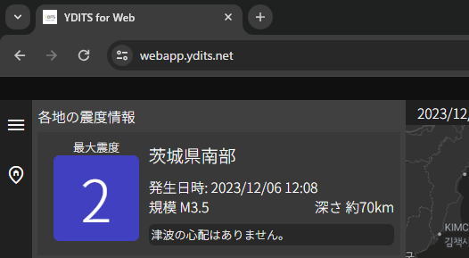
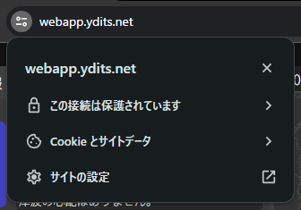
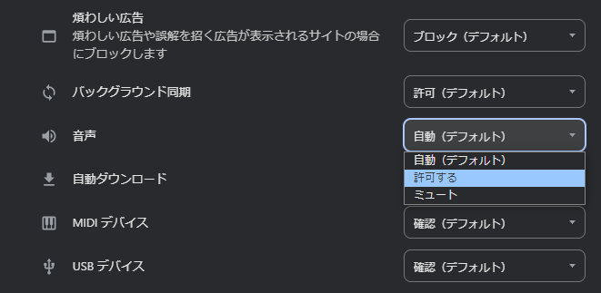

効果音が再生されない場合は、以下の手順を行うことで解決できます。
画像は デスクトップ版 Google Chrome を使用していますが、他のブラウザでも、サイトの設定から音声の許可 を行うことで可能です。
(1) 上部の 'サイト情報' (シークバーアイコン) をクリックします。

(2) 'サイトの設定' をクリックします。

(3) '音声' の項目を '許可する' に変更します。

以上の手順で効果音が再生されるようになります。